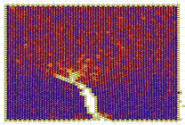
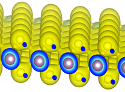
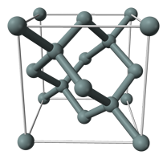

Nanoscale Materials Physics Computation Laboratory
MATSCI 165 (175)
|  |
Undergraduate-level course taught during winter quarter (also open to graduate students).
Computational exploration of fundamental topics in materials science using interactive Java-based computation and visualization tools. Emphasis is on the atomic-scale origins of macroscopic materials phenomena. Simulation methods include molecular dynamics and Monte Carlo with applications in thermodynamics, statistical mechanics, kinetics, material imperfections, mechanical properties, mechanical response. Recommended prerequisites: Some very basic programming skills.
Syllabus
Try this real-time atomistic simulation of stress, strain and failure in a Lennard-Jones solid! |
Atom-Based Computational Methods for Materials
MATSCI 331
|  |
Elective Materials Science course taught during spring quarter.
Introduction to atom-based computational methods for materials with primary emphasis on quantum methods. Density functional theory with periodic boundary conditions. Analytical interatomic potentials and their construction. Computation of mechanical, optical, electronic, vibrational properties of bulk materials and nanomaterials. Molecular dynamics and Monte Carlo methods with applications to structure searches and transport properties. Homeworks involve implementation and use of these algorithms in both MATLAB and research level codes.
Syllabus
Problem Sets |
Atomic Arrangements in Solids
MATSCI 203
|  |
Core Materials Science course taught during autumn quarter.
Atomic arrangements in perfect and imperfect solids, especially important metals, ceramics, and semiconductors. Elements of formal crystallography, including development of point groups and space groups.
Syllabus
Problem Sets |